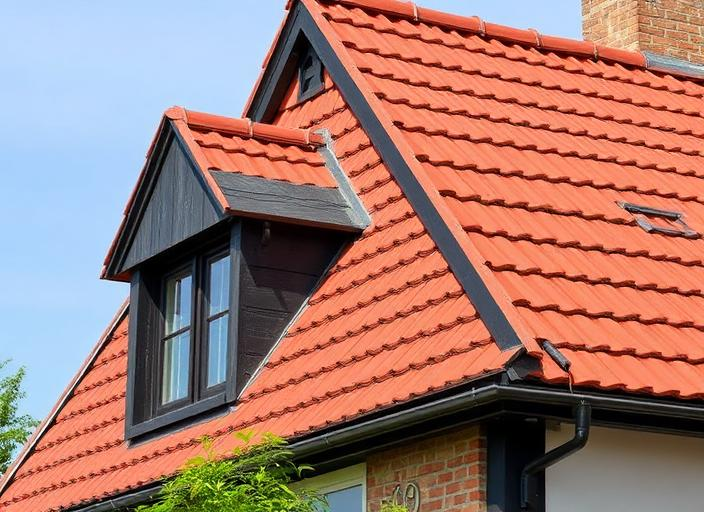

Wanneer is een dak aan renovatie toe?
Vochtplekken, verschoven dakpannen, beschadigde aansluitingen of terugkerende lekkages zijn redenen om je dak te laten nakijken. Een probleem aan de binnenzijde vertelt niet altijd waar het water binnendringt. Laat daarom de oorzaak vaststellen voordat je beslist welke werken nodig zijn.
Een plaatselijk probleem herstellen
Is de rest van het dak in goede staat, dan kan een gerichte herstelling voldoende zijn. Denk aan een beschadigde dakpan, een aansluiting rond een schoorsteen of een probleem met de afvoer. Vraag bij de inspectie ook naar de toestand van het onderdak en de draagstructuur.
Het dak volledig vernieuwen
Bij verspreide slijtage of meerdere terugkerende problemen kan een ruimere renovatie aangewezen zijn. Nieuwe dakbedekking betekent niet automatisch dat de volledige dakconstructie vervangen moet worden. Laat op de offerte duidelijk aangeven welke lagen blijven en welke vernieuwd worden.
Wat is het verschil tussen een plat en een hellend dak?
De dakvorm bepaalt hoe regenwater wordt afgevoerd en welke dakbedekking bruikbaar is. Een plat dak heeft een afschot en een waterdichte dakafdichting nodig. Op een hellend dak spelen de dakhelling, overlapping van de bedekking, het onderdak en de aansluitingen een belangrijke rol.
| Dakvorm | Typische bedekking | Wat laat je controleren? |
|---|---|---|
| Hellend dak | Dakpannen, leien of een geschikte metalen bedekking | Dakhelling, onderdak, bevestiging en aansluitingen |
| Plat dak | EPDM of bitumineuze dakafdichting | Afschot, afvoer, naden, dakranden en opstanden |
| Combinatie | Een passende bedekking per dakdeel | Overgangen tussen de dakdelen en afwatering |
Laat de dakwerker controleren of het gekozen materiaal geschikt is voor de opbouw en helling van jouw dak. Dezelfde bedekking is niet voor elke situatie bruikbaar.
Welke dakbedekking kies je?
Dakpannen
Keramische en betonnen dakpannen zijn veelgebruikte keuzes voor hellende daken. Vergelijk uitstraling, gewicht en geschiktheid voor de dakhelling. De bestaande draagstructuur moet de gekozen opbouw kunnen dragen.
Leien
Leien geven een andere uitstraling dan dakpannen. Bespreek het verschil tussen natuurleien en vezelcementleien en vraag welke bevestiging en onderliggende opbouw voorzien worden. Oude leien kunnen asbest bevatten; laat dit bij twijfel onderzoeken.
EPDM en bitumen
Voor platte daken worden onder meer EPDM en bitumineuze afdichtingen gebruikt. Kijk bij de keuze niet alleen naar het materiaal, maar ook naar de ondergrond, afvoer, aansluitingen en uitvoering. Die details zijn belangrijk voor een waterdicht geheel.
Vraag bij elke optie hoe onderhoud en eventuele herstellingen verlopen. Maak je keuze op basis van het volledige systeem, niet alleen van de prijs van de zichtbare dakbedekking.
Dakrenovatie combineren met dakisolatie
Als je de dakbedekking vernieuwt, is dat een logisch moment om de isolatie en luchtdichting mee te bekijken. Zo voorkom je dat je later opnieuw dezelfde delen moet openen. Laat ook de aansluiting met gevels, dakramen en bestaande isolatie beoordelen.
Isoleren van binnenuit of langs buiten?
Bij een hellend dak zijn verschillende opbouwen mogelijk. Welke aanpak past, hangt af van de toestand van het dak, de beschikbare ruimte en welke onderdelen toch al vernieuwd worden. Bij een plat dak moeten isolatie, dampremming en afdichting als één samenhangende opbouw ontworpen worden.
Vraag naar het isolatiemateriaal, de dikte, de warmteweerstand en de aanpak van vocht en luchtdichting. Alleen een dikte vergelijken is onvoldoende: verschillende materialen kunnen bij dezelfde dikte anders presteren.
Wat kosten dakwerken?
Er is geen vaste prijs die voor elk dak klopt. Een bedrag per vierkante meter is pas zinvol als je weet welke werken erin zitten. Een nieuwe dakbedekking op een gezonde structuur is iets anders dan een renovatie met isolatie, sloop en structurele herstellingen.
- Oppervlakte en vorm: meerdere dakvlakken, hoeken en aansluitingen vragen extra werk.
- Materialen: de bedekking, isolatie en afwerking beïnvloeden het budget.
- Toestand: verborgen schade aan onderdak of houtwerk kan extra werken nodig maken.
- Bereikbaarheid: steigers, werfinrichting en toegang tellen mee.
- Afbraak en afvoer: vraag wat inbegrepen is, vooral bij mogelijke asbestmaterialen.
- Afwerking: dakgoten, dakramen en aansluitingen horen duidelijk op de offerte.
Vergelijk offertes met dezelfde werkomschrijving. Vraag ook hoe bijkomende werken worden afgesproken als er na het openen van het dak schade zichtbaar wordt.
Bereken een richtprijs voor jouw dakwerken
Gebruik de calculator om een eerste budgetinschatting te maken op basis van jouw woning, dak en materiaalkeuze. Je kunt de raming met en zonder nieuwe isolatie bekijken.
Dit is een indicatieve berekening, geen definitieve offerte. Structurele herstellingen, dakkapellen en bijzonder moeilijk bereikbare daken zijn niet inbegrepen. Een dakwerker bevestigt de definitieve prijs.
Open de calculator in een apart tabblad ↗Hoe verloopt een dakrenovatie?
- Inspectie: laat bedekking, onderdak, isolatie, aansluitingen en draagstructuur beoordelen.
- Werkomschrijving: leg materialen, afwerking, sloop en eventuele isolatie vast.
- Offerte en planning: bespreek bereikbaarheid, bescherming tegen regen en wat gebeurt bij onvoorziene schade.
- Uitvoering: de dakwerker voert de afgesproken opbouw en aansluitingen uit.
- Oplevering: controleer de afwerking en ontvang facturen, productinformatie en afgesproken garantiedocumenten.
De duur hangt af van de omvang, constructie, bereikbaarheid en weersomstandigheden. Vraag een planning voor jouw werf in plaats van uit te gaan van een algemene termijn.
Premies, vergunningen en asbest: wat controleer je vooraf?
Premies voor dakwerken
In Vlaanderen kan Mijn VerbouwPremie van toepassing zijn op dakrenovatie en dakisolatie. Controleer de actuele voorwaarden voor jouw situatie; een calculatorraming is geen bevestiging van je recht op een premie. Voor Brussel en Wallonië gelden andere regelingen.
Bekijk de officiële informatie over dakpremies in Vlaanderen.
Vergunning of architect
Of een vrijstelling, vergunning of architect nodig is, hangt af van de ingreep en het gebouw. De Vlaamse overheid beschrijft voorwaarden voor werken aan gevels en daken. Bespreek je plannen vooraf met je gemeente, vooral wanneer vorm, volume of draagstructuur verandert of het gebouw beschermd is.
Lees de Vlaamse regels voor renovatiewerken.
Mogelijke asbestmaterialen
Oude leien en golfplaten kunnen asbest bevatten. Laat verdachte materialen beoordelen voordat je dakwerken start. Maak afspraken over onderzoek, verwijdering en afvoer en bewerk verdachte materialen niet zelf.
Veelgestelde vragen over dakwerken
Moet ik bij nieuwe dakbedekking ook de dakconstructie vervangen?
Niet automatisch. De toestand en draagkracht van de bestaande structuur bepalen welke ingrepen nodig zijn. Laat dit tijdens de inspectie controleren en op de offerte verduidelijken.
Kan ik dakwerken combineren met zonnepanelen?
Bespreek beide plannen vóór de uitvoering. Laat controleren of bedekking en constructie geschikt zijn en stem bevestiging, bekabeling en eventuele toekomstige werken op elkaar af.
Waarom verschillen offertes voor hetzelfde dak?
Ze kunnen andere materialen, isolatie, afwerking of bijkomende werken bevatten. Vergelijk de volledige werkomschrijving, inbegrepen posten en afspraken over onvoorziene schade.
Is de richtprijs uit de calculator een offerte?
Nee. Het is een eerste raming op basis van je antwoorden. Een dakwerker controleert de werkelijke toestand, oppervlakte en uitvoering en stelt een definitieve offerte op.